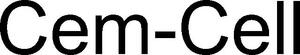

Trade Mark Journal No.2025/031 1 August 2025
WO0000001864642 (1,34,35)
Office of origin: Germany
Date of International Registration:5 February 2025
Date of designation in the UK:
5 February 2025

International priority date claimed: 6 August 2024
(Germany)
- Class 1
- Activated carbon filter for cleaning gases; activated carbon; filter carbon.
- Class 34
- Tins for cigarettes; cigar cases, cigar boxes; boxes for electronic cigarettes; smoking pipe stems; mouthpieces for cigarette holders; herbs for smoking; tobacco pipe racks; humidifiers for tobacco; cigar cutters; flavourings for electronic cigarettes, except essential oils; cigar cutters; cigar holders of precious metal; match holders; match holders, not of precious metal; cigarettes, cigars, cigarillos and other ready-for-use smoking articles; roll-your-own tobacco; tobacco filters; flavoured tobacco; cigars; tobacco pouches; ashtrays; cigarette tobacco; cigarette lighters, not for land vehicles; mouthpieces for cigarettes; snus with tobacco; cigarettes made from tobacco substitutes, not for medical purposes; flavourings for tobacco substitutes, except essential oils; cigar tubes; inhalable aerosols and carriers substances therefor, for use in water pipes; pipe tobacco; hand held machines for injecting tobacco into paper tubes; smokeless tobacco; snus without tobacco; cigarette lighters, not of precious metal; cigarette holders; matches; matchboxes of precious metal; snuff boxes; snuff boxes, not of precious metal; cigarette paper tubes with filters; containers for smoking articles, humidors; tobacco pipe paper [absorbent]; tobacco pipes of precious metal; cigarette holders, not of precious metal; cigar filters; roll-your-own loose tobacco, loose tobacco for pipes; tobacco pipe cleaners; holders of precious metal for cigarette lighters; chemical flavourings in liquid form for refilling cartridges for electronic cigarettes; pipe holders, especially for water and tobacco pipes; snuff; ashtrays of precious metal; pocket lighters, not of precious metal; cigarette tips; refill cartridges for electronic cigarettes; tobacco substitutes; cigar humidifiers; snus; tobacco pipe scrapers; matchboxes, not of precious metal; chewing tobacco; manufactured tobacco; vaporizer tubes for smokeless cigarettes; amber tips for cigars and cigarette holders; snuff boxes of precious metal; shag; herbal molasses [tobacco substitutes]; liquids for electronic cigarettes [e-liquid], consisting of flavouring substances in liquid form for refilling cartridges for electronic cigarettes; tobacco storage tins; tobacco products for the purpose of being heated; tea for smoking as a tobacco substitute; roll-your-own tobacco for cigarettes; cases for cigarettes; inhalers for use as an alternative to tobacco cigarettes; cigarette lighters made of precious metal; water pipe tobacco; match holders made of precious metal; cases for tobacco pipes, not made of precious metal; cigarette ash containers; cigarette cases, cigarette tins; cartridges for electronic cigarettes; match holders; sulfur matches; cigar pouches; containers for cigars; ember extinguisher for cigarettes, cigars and heated tobacco sticks; liquids for electronic cigarettes; cases for electronic cigarettes; pipes for smoking mentholated tobacco substitutes; cigars for use as an alternative to tobacco cigarettes; cigarette cutters; cigar cases, not of precious metal; cigarette holders; vaporisers for personal use and electronic cigarettes, and flavourings and solutions therefor; lighters of precious metal; pipe stoppers [smoker's article]; cheroots; ashtrays for smokers of non-precious metal; cigarette paper; tobacco and tobacco substitutes; pipe cleaners; cases of precious metal for tobacco pipes; tobacco and tobacco products, including tobacco substitutes; menthol tobacco; tobacco pipes, not of precious metal; menthol cigarettes; safety matches; matchboxes; roll-your-own tobacco for cigarettes; humidifying cigar boxes; cigar tips; mouthpieces for pipes, especially for water and tobacco pipes; pipe stoppers; pipe trays; pipe pouches; menthol pipe tobacco; cigarettes; lighters, not of precious metal [except for motor vehicles]; tobacco tar for use in electronic cigarettes; tobacco leafs; flavourings for tobacco, other than essential oils; tobacco-free cigarettes, other than for medical purposes; atomisers for electronic cigarettes; tobacco-containing snuff; tobacco; cigar boxes; smoker's articles; tobacco products; matches with white phosphorus; non-tobacco-containing snuff; tobacco pipes; spittoons for tobacco users; tobacco containers; steam stones for water pipes; vaporisers for inhalation for smokers; lighters for smokers; pipe stands [smoking articles]; pouches for tobacco; flavouring substances for tobacco; smoking articles, not of precious metal; snuff dispensers; pouches for pipes; humidifiers for cigars; cartridges for electronic cigarettes filled with liquid chemical flavouring substances; tobacco pipe absorbent paper; holders for electronic cigarettes; pipe filters; holders for cigarette lighters; cigarette filters; absorbent paper for tobacco; tobacco jars; matches with yellow phosphorus; cigarillos; substances for inhalation using water pipes, in particular aromatic substances; cigarette holders of precious metal; liquids for electronic cigarettes [e-liquids] made of vegetable glycerine; cigarette cases, not of precious metal; pipe stands; tobacco substitutes, not for medical purposes; cigarette cases of precious metal; kretek for non-medical purposes; filter-tipped cigarettes; sleeves for long Asian tobacco pipes; cigarette tubes; cleaners for electronic cigarettes; pocket machines for rolling cigarettes; cigarette lighters; natural tobacco; cigarette papers; small-cut Japanese tobacco [kizami tobacco]; liquids for electronic cigarettes [e-liquids] made of propylene glycol; pipe knives; cigar boxes of precious metal; cigarettes containing tobacco substitutes; cigarette boxes of precious metal; holders for snuff boxes; smoking tobacco; cigar lighters; holders for cigarette lighters, not of precious metal; cigarette paper booklets.
- Class 35
- Retail and wholesale services relating to smoking products and accessories therefor, hash pipes, bongs [hookahs], roach clips [clips for holding joints], vaporizers for smoking, cigarette papers, cigarette rolling machines, scales, cannabis grinders, cigarette lighters, e-cigarettes and parts and accessories for e-cigarettes, smoking sets for storing and stockholding cigarette holders; retail services [on- and offline] relating to smoker's articles and accessories therefor; mail order retail services [on- and offline] relating to smoker's articles and accessories therefor; provision of an online marketplace for buyers and sellers of goods.
PURIZE Filters GmbH & Co. KG
Representative: Patent- und Rechtsanwälte Loesenbeck, Specht und Dantz, Am Zwinger 2, 33602 Bielefeld, GERMANY